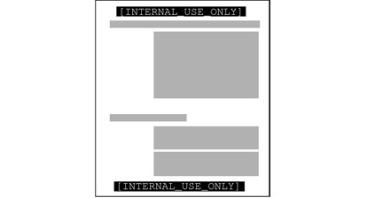
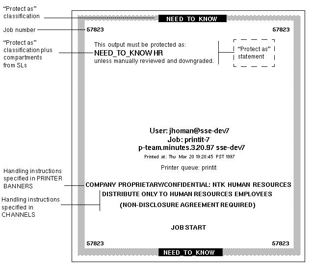

Solaris Trusted Extensions Administrator's Procedures
|
|||||||||||||||||||||||||||||||||||||||||||||
|
Part I Initial Configuration of Trusted Extensions 1. Security Planning for Trusted Extensions 2. Configuration Roadmap for Trusted Extensions 3. Adding Solaris Trusted Extensions Software to the Solaris OS (Tasks) 4. Configuring Trusted Extensions (Tasks) 5. Configuring LDAP for Trusted Extensions (Tasks) 6. Configuring a Headless System With Trusted Extensions (Tasks) Part II Administration of Trusted Extensions 7. Trusted Extensions Administration Concepts 8. Trusted Extensions Administration Tools 9. Getting Started as a Trusted Extensions Administrator (Tasks) 10. Security Requirements on a Trusted Extensions System (Overview) 11. Administering Security Requirements in Trusted Extensions (Tasks) 12. Users, Rights, and Roles in Trusted Extensions (Overview) 13. Managing Users, Rights, and Roles in Trusted Extensions (Tasks) 14. Remote Administration in Trusted Extensions (Tasks) 15. Trusted Extensions and LDAP (Overview) 16. Managing Zones in Trusted Extensions (Tasks) 17. Managing and Mounting Files in Trusted Extensions (Tasks) 18. Trusted Networking (Overview) 19. Managing Networks in Trusted Extensions (Tasks) 20. Multilevel Mail in Trusted Extensions (Overview) 21. Managing Labeled Printing (Tasks) Managing Printing in Trusted Extensions (Task Map) Configuring Labeled Printing (Task Map) Reducing Printing Restrictions in Trusted Extensions (Task Map) 22. Devices in Trusted Extensions (Overview) 23. Managing Devices for Trusted Extensions (Tasks) 24. Trusted Extensions Auditing (Overview) 25. Software Management in Trusted Extensions (Tasks) Creating and Managing a Security Policy Site Security Policy and Trusted Extensions Computer Security Recommendations Physical Security Recommendations Personnel Security Recommendations Additional Security References B. Using CDE Actions to Install Zones in Trusted Extensions Associating Network Interfaces With Zones by Using CDE Actions (Task Map) Preparing to Create Zones by Using CDE Actions (Task Map) Creating Labeled Zones by Using CDE Actions (Task Map) C. Configuration Checklist for Trusted Extensions Checklist for Configuring Trusted Extensions D. Quick Reference to Trusted Extensions Administration Administrative Interfaces in Trusted Extensions Solaris Interfaces Extended by Trusted Extensions Tighter Security Defaults in Trusted Extensions Limited Options in Trusted Extensions E. List of Trusted Extensions Man Pages Trusted Extensions Man Pages in Alphabetical Order |
Labels, Printers, and PrintingTrusted Extensions software uses labels to control printer access. Labels are used to control access to printers and to information about queued print jobs. The software also labels printed output. Body pages are labeled, and mandatory banner and trailer pages are labeled. Banner and trailer pages can also include handling instructions. The system administrator handles basic printer administration. The security administrator role manages printer security, which includes labels and how the labeled output is handled. The administrators follow basic Solaris printer administration procedures, then they assign labels to the print servers and printers. Trusted Extensions software supports both single-level and multilevel printing. Multilevel printing is implemented in the global zone only. To use the global zone's print server, a labeled zone must have a host name that is different from the global zone. One way to obtain a distinct host name is to assign an IP address to the labeled zone. The address would be distinct from the global zone's IP address. Restricting Access to Printers and Print Job Information in Trusted ExtensionsUsers and roles on a system that is configured with Trusted Extensions software create print jobs at the label of their session. The print jobs can print only on printers that recognize that label. The label must be in the printer's label range. Users and roles can view print jobs whose label is the same as the label of the session. In the global zone, a role can view jobs whose labels are dominated by the label of the zone. Printers that are configured with Trusted Extensions software print labels on the printer output. Printers that are managed by unlabeled print servers do not print labels on the printer output. Such printers have the same label as their unlabeled server. For example, a Solaris print server can be assigned an arbitrary label in the tnrhdb database of the LDAP naming service. Users can then print jobs at that arbitrary label on the Solaris printer. As with Trusted Extensions printers, those Solaris printers can only accept print jobs from users who are working at the label that has been assigned to the print server. Labeled Printer OutputTrusted Extensions prints security information on body pages and banner and trailer pages. The information comes from the label_encodings file and from the tsol_separator.ps file. The security administrator can do the following to modify defaults that set labels and add handling instructions to printer output:
The security administrator can also configure user accounts to use printers that do not print labels on the output. Users can also be authorized to selectively not print banners or labels on printer output. Labeled Body PagesBy default, the “Protect As” classification is printed at the top and bottom of every body page. The “Protect As” classification is the dominant classification when the classification from the job's label is compared to the minimum protect as classification. The minimum protect as classification is defined in the label_encodings file. For example, if the user is logged in to an Internal Use Only session, then the user's print jobs are at that label. If the minimum protect as classification in the label_encodings file is Public, then the Internal Use Only label is printed on the body pages. Figure 21-1 Job's Label Printed at the Top and Bottom of a Banner PageLabeled Banner and Trailer PagesThe following figures show a default banner page and how the default trailer page differs. Callouts identify the various sections. Note that the trailer page uses a different outer line. The text, labels, and warnings that appear on print jobs are configurable. The text can also be replaced with text in another language for localization. Figure 21-2 Typical Banner Page of a Labeled Print JobFigure 21-3 Differences on a Trailer Page The following table shows aspects of trusted printing that the security administrator can change by modifying the /usr/lib/lp/postscript/tsol_separator.ps file. Note - To localize or internationalize the printed output, see the comments in the tsol_separator.ps file. Table 21-1 Configurable Values in the tsol_separator.ps File
PostScript Printing of Security InformationLabeled printing in Trusted Extensions relies on features from Solaris printing. In the Solaris OS, printer model scripts handle banner page creation. To implement labeling, a printer model script first converts the print job to a PostScriptTM file. Then, the PostScript file is manipulated to insert labels on body pages, and to create banner and trailer pages. Solaris printer model scripts can also translate PostScript into the native language of a printer. If a printer accepts PostScript input, then Solaris software sends the job to the printer. If a printer does not accept PostScript input, then the software converts the PostScript format to a raster image. The raster image is then converted to the appropriate printer format. Because PostScript software is used to print label information, users cannot print PostScript files by default. This restriction prevents a knowledgeable PostScript programmer from creating a PostScript file that modifies the labels on the printer output. The Security Administrator role can override this restriction by assigning the Print PostScript authorization to role accounts and to trustworthy users. The authorization is assigned only if the account can be trusted not to spoof the labels on printer output. Also, allowing a user to print PostScript files must be consistent with the site's security policy. Printer Model ScriptsA printer model script enables a particular model of printer to provide banner and trailer pages. Trusted Extensions provides four scripts:
The foomatic scripts are used when a printer driver name begins with Foomatic. Foomatic drivers are PostScript Printer Drivers (PPD). By default, “Use PPD” is specified in the Print Manager when you add a printer. A PPD is then used to translate banner and trailer pages into the language of the printer. Additional Conversion FiltersA conversion filter converts text files to PostScript format. The filter's programs are trusted programs that are run by the printer daemon. Files that are converted to PostScript format by any installed filter program can be trusted to have authentic labels and banner and trailer page text. Solaris software provides most conversion filters that a site needs. A site's System Administrator role can install additional filters. These filters can then be trusted to have authentic labels, and banner and trailer pages. To add conversion filters, see Chapter 7, Customizing Printing Services and Printers (Tasks), in System Administration Guide: Solaris Printing. Interoperability of Trusted Extensions With Trusted Solaris 8 PrintingTrusted Solaris 8 and Trusted Extensions systems that have compatible label_encodings files and that identify each other as using a CIPSO template can use each other for remote printing. The following table describes how to set up the systems to enable printing. By default, users cannot list or cancel print jobs on a remote print server of the other OS. Optionally, you can authorize users to do so.
Trusted Extensions Print Interfaces (Reference)The following user commands are extended to conform with Trusted Extensions security policy:
The following administrative commands are extended to conform with Trusted Extensions security policy. As in the Solaris OS, these commands can only be run by a role that includes the Printer Management rights profile.
Trusted Extensions adds the solaris.label.print authorization to the Printer Management rights profile. The solaris.print.unlabeled authorization is required to print body pages without labels. |
||||||||||||||||||||||||||||||||||||||||||||
|